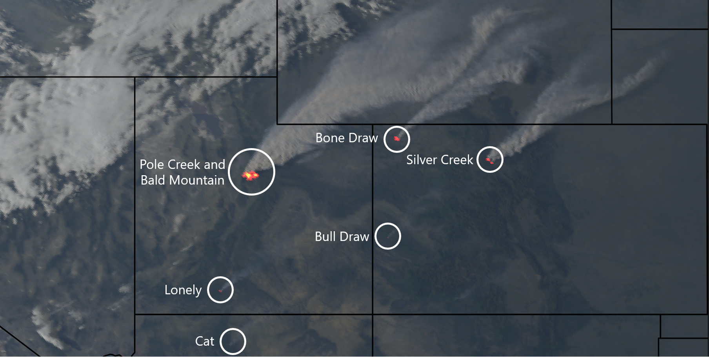
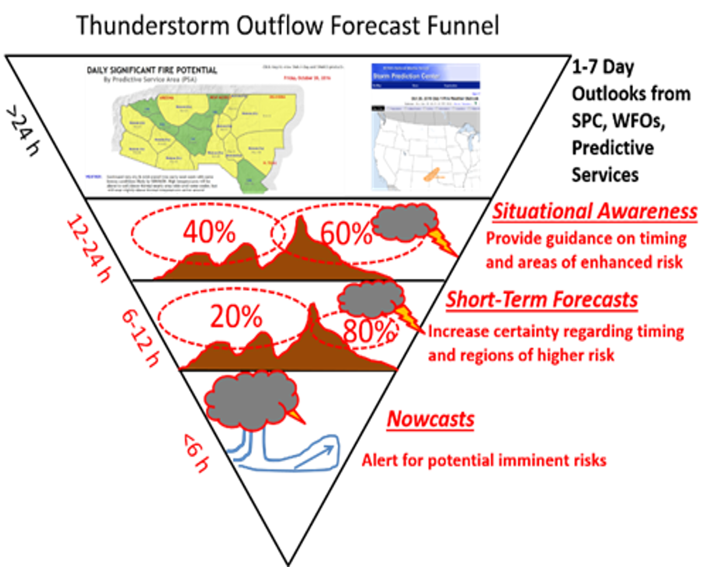
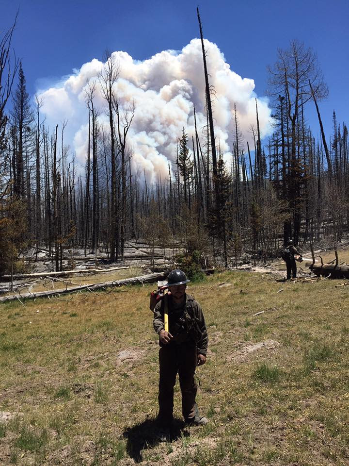

Ph.D. Research
My PhD research utilized new technology for archiving and accessing output from the High-Resolution Rapid Refresh model and observations made on the GOES-16/17 satellite. High-throughput computing was used to rapidly compute statistical information about these data sets and was then applied to assist situational awareness of weather conditions in the wildland fire environment.
Assessment of HRRR Model Forecasts of Convective Outflows in the Fire Environment
Join Fire Science Program
Status: Accepted
The proposed work will evaluate the ability of operational and experimental versions of the High Resolution Rapid Refresh (HRRR) modeling system for the continental United State and Alaska to forecast the characteristics of mesoscale atmospheric boundaries arising from thunderstorm outflows, gust fronts, and downburst winds (referred collectively as convective outflows). The objective is to lead to enhanced situational awareness within the operational fire weather community of the ability of the HRRR model and predictive tools that rely on its output to nowcast and forecast convective outflows.
HRRR Archive Access PhD General Exam HRRR Fire Forecasts Project Home Page Full Dissertation Defense Presentation
Cloud archiving and data mining of High-Resolution Rapid Refresh forecast model output
High-Resolution Rapid Refresh Model Data Analytics Derived on the Open Science Grid to Assist Wildland Fire Weather Assessment
Comparison of Lightning Forecasts from the High-Resolution Rapid Refresh Model to Geostationary Lightning Mapper Observations

GOES-16 True Color and Fire Temperature RGB Composite


Sensitivity of Numerical Simulations of Coastal Atmospheric Boundary Layers to Remote Sensing Estimates of Surface State
2016 NASA's Earth and Space Science Fellowship program
Status: Declined
Residents of many coastal metropolitan areas are often exposed to unhealthy levels of ozone during summer. High ozone levels in coastal zones are common because offshore shallow stable boundary layers tend to decrease vertical mixing and concentrate ozone and precursor pollutants in a shallow layer near the surface. Thermally-driven flows between lakes or oceans and coastal urban and suburban areas subsequently may recirculate ozone and ozone precursors within the stable boundary-layer. Forecasting the evolution of coastal ozone events is a current challenge to air quality forecasters requiring high resolution numerical models. Preliminary work shows that these models are sensitive to the surface state, such as coastal water temperature and urban land cover properties.
Many operational weather and air quality models poorly initialize the underlying surface state in coastal areas, which can adversely
affect the ability of numerical simulations to properly forecast boundary-layer depth and the timing and intensity of thermally-
driven flows. In this proposed work, remote sensing estimates of the surface state will be used to improve simulations of the Weather
Research and Forecast model. The sensitivity of coastal boundary layer characteristics to water surface temperature, green vegetation
fraction, land use, urban properties, and albedo will be tested. The model simulations will be compared to observations from recent
and upcoming ozone monitoring field studies. Upon completion, this proposed work will fulfill NASA's Science Mission Directorate
to advance knowledge of our changing environment and improve life by using NASA remote sensing products to improve weather
simulations and air quality forecasts in coastal environments.
Boundary Layer Sensitivity to Dynamically-Changing Surface States
2017 NASA's Earth and Space Science Fellowship program
Status: Declined
High resolution numerical weather prediction models provide invaluable information for many applications, which include aviation, air quality, wildfire management, flooding hazards, solar and wind energy, and general weather forecasting. The accuracy of these numerical models are affected by their representation of the underlying surface state. Surface characteristics vary spatially and temporally on all scales due to anthropogenic and natural factors. For example, drought, irrigation, deforestation, wildfire burn scars, vegetation regrowth, urban development, and changes in coastlines and water covered areas affect albedo, surface roughness, soil moisture, and latent and sensible heat fluxes that alter atmospheric boundary layer processes.
Current operational weather prediction models tend to rely on static, outdated, and simplified land use classifications for the parameterization of heat, moisture, and momentum fluxes near the surface. Remote sensing estimates of surface state from a small sample of images are often used to develop those generalized land use classifications and their properties (e.g., albedo and surface roughness). More attention is now being placed on incorporating into research models remotely-sensed estimates of substantive local changes in the surface state that may have transpired on temporal scales within a few years to as recently as within the current season.
The objective of the proposed work is to investigate the sensitivity of numerical simulations of summertime atmospheric boundary layers in the western United States to improved characterization of the surface state derived from NASA remote sensing products. Of particular interest is to contrast the effects of early to late summer-season changes in: (1) areal extent and temperature of reservoirs and lakes and (2) extent and characteristics of vegetation and soil in rural and urban areas. Reliance in numerical simulations on static or seasonally-evolving climatologies of surface state characteristics may introduce substantive errors in boundary-layer depths and transport winds that affect simulations of poor air quality episodes and wildfire outbreaks that are common during summer in the West. First, literature will be reviewed to identify appropriate specifications of surface characteristics, such as albedo and surface roughness, for more diverse ranges of land cover and vegetation than are commonly used for parameterizing surface fluxes in land surface models. Second, the extent to which those properties can be specified based on NASA remote-sensing products and utilized in the Weather Research and Forecast model will be assessed. Third, sensitivity of the atmospheric boundary layer to improved treatment of land use and cover will be investigated for selected case studies of high interest events (e.g., poor air quality episodes and after major wildfires). This work is intended to benefit the utility of high-resolution weather forecasts for diverse applications, including air quality, agriculture and water and forest management.
NOAA Big Data Request for Information
Since I use GOES-16 data acquired from Amazon AWS S3 buckets,
I responded to the NOAA Big Data Project
Request for Information.
Response Document